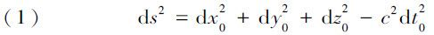

数学只研究概念之间的相互关系，而不考虑它们对于经验的关系。物理学也研究数学概念；但这些概念只是由于明白地确定了它们对于经验对象的关系，才得到物理的内容。运动、空间、时间这些概念的情况尤其是这样。
相对论是这样一种物理理论，它是以关于这三个概念的贯彻一致的物理解释为基础的。“相对论”这名称同下述事实有关： 从可能的经验观点来看，运动总是显示为一个物体对另一个物体的相对运动（比如汽车对于地面，或者地球对于太阳和恒星）。运动绝不可能作为“对于空间的运动”，或者所谓“绝对运动”而被观察到的。“相对性原理”在其最广泛的意义上是包含在如下的陈述里： 全部物理现象都具有这样的特征，即它们不为“绝对运动”概念的引进提供任何根据；或者用比较简短但不那么精确的话来说： 没有绝对运动。
从这样一种否定的陈述中，我们似乎看不出什么东西。但实际上，它是对于（可以想象的）自然规律的一个严格的限制。在这个意义上，相对论同热力学之间存在着一种类似性。后者所根据的也是一条否定的陈述：“永动机是不存在的。”
相对论的发展分为两个步骤，即“狭义相对论”和“广义相对论”。后者把前者的有效性看作是一种极限情况，并且是它的贯彻一致的延续。
A. 狭义相对论
古典力学中空间和时间的物理解释
从物理学的观点来看，几何学就是相互静止的刚体彼此能够据以相互配置（比如，三角形由三根其端点永远连接在一起的棒所构成）的那些定律的全体。人们假定，按照这种解释的欧几里得定律是有效的。在这种解释中，“空间”原则上是一个无限的刚体（或者骨架），其他一切物体的位置都同它发生关系（参照体）。解析几何（笛卡尔）用三根相互垂直的刚性杆作为表示空间的参照体，而空间中各个点的“坐标”（x,y,z ）则是以垂直投影（并且借助于刚性的单位尺度）这个人所共知的办法来量度的。
物理学研究空间和时间里的“事件”。对于每一事件，除了它的空间坐标x,y,z 以外，还有一个时间值t .后者被认为是用一只空间大小可以忽略的时钟（理想的周期过程）来量的。这只时钟C 被看作静止在坐标系的一个点上，比如在原点（x =y =z =0）上。在点P （x,y,z ）上发生的事件的时间则是这样来定义的： 时钟C 上所指示的时间同这事件是同时的。这里“同时”这一概念假定不需要特别定义就有其物理意义。这是不够严格的，只是因为借助于光（从日常经验的观点来看，它的速度实际上是无限的），空间上分隔开的事件的同时性看起来好像是可以立刻确定下来，这种不严格性才似乎是无害的。
狭义相对论消除了这种不严格性，它用光信号从物理上来定义同时性。在P 处发生的事件的时间t ，是从这个事件发出的光信号到达时钟C 时C 上的读数，减去光信号走这段距离所需的时间。作这种改正时，要预先假定（假设）光的速度是不变的。
这个定义把空间上分隔开的两个事件的同时性概念归结为同一地点上出现的两个事件——即光信号到达C 和C 的读数——的同时性（重合）的概念。
古典力学所根据的是伽利略原理： 一个物体只要不受别的物体的作用，它总是沿着直线作匀速运动。这条陈述不能对任意运动着的坐标系都有效。它只能对所谓“惯性系”才有效。惯性系是一些相互作直线匀速运动的坐标系。在古典物理学中，所有定律只是对一切惯性系才有效（狭义相对性原理）。
现在容易理解那个导致狭义相对论的困境。经验和理论都已逐渐导致这样的信念： 认为光在空虚空间里总是以同一速度c行进，这速度同光的颜色和光源的运动状态都无关（光速不变原理——下面叫它“L 原理”）。现在，粗浅的直觉考查似乎表明，同一支光线对于一切惯性系不能都以同一速度c 运动的。L 原理似乎同狭义相对性原理相矛盾。
可是，结果弄清楚了，这矛盾只是表面上的，它本质上是由于对时间的绝对性的成见，或者说得确切些，是由于对分隔开的事件的同时性的绝对性有成见。我们刚才看到，一个事件的x,y,z 和t ,目前只能参照于某一选定的坐标系（惯性系）来确定。事件的x,y,z,t 从一个惯性系转移到另一惯性系的变换（坐标变换）问题，如果没有特别的物理假定，那是不能解决的。可是下面这个假设对问题的解决正好足够： L 原理对于一切惯性系都成立（把狭义相对性原理用于L 原理）。凡是这样规定的变换，对于x,y,z,t 都是线性的，它们叫做洛伦兹变换。洛伦兹变换在形式上可以由下面这样的要求来表征： 由两个无限靠近的事件的坐标差dx ,dy ,dz ,dt 所构成的表示式
dx 2 +dy 2 +dz 2 -c 2 dt 2
是不变的。（就是说，通过这种变换，它转换成一个由新坐标系的坐标差所构成的同样的表示式。）
借助于洛伦兹变换，狭义相对性原理可以这样来表述： 自然规律对于洛伦兹变换是不变的。（就是说，如果人们借助于关于x,y,z,t 的洛伦兹变换而引用了新的惯性系，那么，自然规律并不改变它的形式。）
狭义相对论导致了对空间和时间的物理概念的清楚理解，并且由此认识到运动着的量杆和时钟的行为。它在原则上取消了绝对同时性概念，从而也取消了牛顿所理解的那个即时超距作用概念。它指出，在处理同光速相比不是小到可忽略的运动时，运动定律必须加以怎样的修改。它导致了麦克斯韦电磁场方程的形式上的澄清；特别是导致了对电场和磁场本质上的同一性的理解。它把动量守恒和能量守恒这两条定律统一成一条定律，并且指出了质量同能量的等效性。从形式的观点来看，狭义相对论的成就可以表征如下： 它一般地指出了普适常数c（光速）在自然规律中所起的作用，并且表明以时间作为一方，空间坐标作为另一方，两者进入自然规律的形式之间存在着密切的联系。
B. 广义相对论
狭义相对论在一个基本点上保留了古典力学的基础，那就是这样的陈述： 自然规律只对惯性系才有效。对于坐标所“许可的”变换（即那些使定律的形式保持不变的变换）只能是（线性）洛伦兹变换。这种限制果真有物理事实为根据吗？下面的论证令人信服地否定了它。
等效原理。物体有惯性质量（对加速度的抵抗），又有引力质量（它决定物体在一既定的引力场中的重量，比如在地面上的重量）。这两个量，按照它们的定义是那么不同，但按照经验，它们却是用同一个数值来量度的。这里面必定有更深一层的理由。这个事实也可以这样来描述： 在引力场中，不同的质量得到同一加速度。最后，它也可以表述成这样： 物体在引力场中的行为好像在没有引力场中一样，只要在没有引力场的情况下是用一个均匀加速的坐标系（代替惯性系）作为参照系。
因此，似乎没有理由可以禁止对后一情况作如下的解释。人们认为这个坐标系是“静止的”，并且认为那个对它说来是存在的“表观的”引力场，是一个“真正的”引力场。这种由坐标系的加速度所“产生”的引力场当然会是无限扩延的，而这是不可能由有限范围里的有引力的物体产生出来的；可是，如果我们要寻求一种类似场的理论，这件事难不倒我们。按照这种解释，惯性系就失去了它的意义，并且也“说明”了引力质量同惯性质量之所以相等。（根据描述方式的不同，物质的这个同一性质可以表现为重量，也可以表现为惯性。）
从形式上看，承认那种对原来的“惯性”坐标加速运动着的坐标系，就意味着承认非线性的坐标变换，因而大大扩充了不变性这个观念，即大大扩充了相对性原理。
首先，用狭义相对论的结果所作的透彻的讨论表明，坐标经过这样的推广后，不能再被直接解释为量度的结果了。只有坐标差同那些描述引力场的场量合起来才能确定事件之间的可量度的距离。在人们不得不承认非线性坐标变换也是等效坐标系之间的变换之后，最简单的要求看来是承认一切连续的坐标变换（它们形成一个群），也就是说，要承认任何以正则函数来描述场的曲线坐标系（广义相性原理）。
现在不难了解为什么广义相对性原理（以等效原理为基础）会导致引力理论。有一种特殊的空间，我们可以认为它的物理结构（场）根据狭义相对论是完全知道了的。这就是没有电磁场也没有物质的空虚空间。这种空间完全由它的“度规”性质来确定： 设dx 0 ,dy 0 ,dz0,dt0是两个无限接近的点（事件）的坐标差；那么

是一个可量度的量，它同惯性系的特殊选取无关。如果通过一般的坐标变换，在这空间里引进新的坐标x 1 ,x 2 ,x 3 ,x 4 ,那么对于同一对点，ds 2 这个量表现为这样的形式
（2）ds 2 =∑gik dxi dxk （i 和k 都从1到4累加起来），
此处gik =gik .这些gik 形成一个“对称张量”，并且都是x 1 ,…x 4 的连续函数，按照“等效原理”，它们描述一种特殊的引力场（即可以再变换成形式（1）的引力场）。根据黎曼关于度规空间的研究，这种gik 场的数学性质能被确凿地规定下来（“黎曼条件”）。然而我们所要寻求的是“一般”引力场所满足的方程。我们自然要假定它们也能被描述成gik 类型的张量场，但一般不允许变换成形式（1），这就是说，它们不满足“黎曼条件”，而只满足一些较宽的条件，这些条件也像黎曼条件一样是同坐标的选取无关的（也就是广义不变的）。作简单的形式考查，就可得到同黎曼条件有密切联系的较宽的条件。这些条件就是纯引力场（存在于物质的外面并且没有电磁场）的方程。
这些方程以近似定律的形式得出了牛顿引力力学方程，还得出一些已为观察所证实的微小的效应（光线受到星体引力场的偏转，引力势对于发射光频率的影响，行星椭圆轨道的缓慢转动——水星近日点的运动）。它们还进一步解释了各个银河系的膨胀运动，这运动是由那些银河系所发出的光的红移表现出来的。
可是广义相对论还不完备，因为广义相对性原理只能满意地用于引力场，而不能用于总场。我们还没有确实地知道究竟该用怎么样的数学结构形式来描述空间里的总场，以及这种总场所遵循的究竟是怎么样的广义不变定律。但有一件事似乎可以肯定，那就是，广义相对性原理对于总场问题的解决，会证明是一个必要而有效的工具。
[1] 这是爱因斯坦于1948年为《美国人民百科全书》（The American People's Encyclopedia , 1949年，芝加哥Spencer出版）所写的一个条目。这里译自《晚年集》，41-48页。《晚年集》中此文的标题是“相对论”。——编译者注。